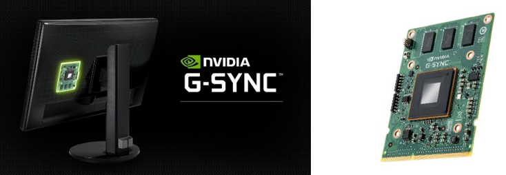
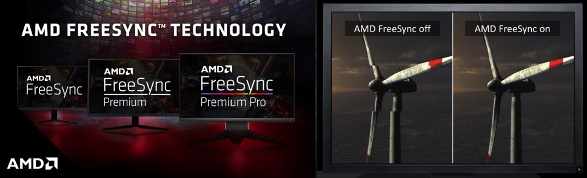

Monitorok
A monitor olyan számítógépes hardvereszköz, amely a számítógép által a videókártyán keresztül létrehozott videó és grafikus információkat jeleníti meg. A régebbi monitorok fekete-fehérek voltak, de ma már csak színes monitorokat gyártanak
Főbb paraméterei
Képarány : Ez a monitor kijelző oldalhosszúságainak a geometriai aránya. Általában 4:3-hoz vagy 16:9-hez képarány az elterjedt.
Kontrasztarány: Az egyik legfontosabb paraméter. A legfényesebb szín és a legsötétebb szín aránya, amit a monitor elő tud állítani. A nagyobb kontrasztarányos monitorok jobb felhasználó élményt nyújtanak, mivel jobb képet képesek megjeleníteni.
Képátló:A monitor kijelzőjének a méretét jelzi. Ezt az egységet hüvelykben mérik. Egy hüvelyk 2,54 cm-ternek felel meg.
Válaszidő:Azt az időt jelöli ezredmásodpercekben, amely ahhoz kell, hogy a kijelzőn egy képpont fényereje megváltozzon. Ha a monitor lassú válaszidővel rendelkezik, akkor a felhasználó nem lesz képes gyors változtatásokat életbe léptetni a monitoron. Ez az e-sport rendezvényeken nagy hátránynak számít.
Fényerő:: A monitor maximális fényerejét jellemzi. A szerves fénykibocsátó diódás monitorok (OLED) fényereje jelentősen kisebb, mint a folyadékkristályos technológiát (LCD) használó társaiké.
Frissítési frekvencia: A monitor képernyőjének újra rajzolásának a gyakorisága, minél magasabb ez az érték, annál folyamatosabbnak tűnik a monitoron a megjelenő képi adat.
Megjeleníthető színek száma: A megjeleníthető színárnyalatok számát (színmélységét) jelöli. Általában 16,7 millió színt tud megjeleníteni egy monitor.
Látószög: A monitorok betekintési szögeit adja meg. Általában két számmal jellemzik, az első a horizontális, míg a második a függőleges szöget adja meg. Például:( H:160°/ V:150°).
Energia fogyasztás: Nincs hatása a monitor teljesítményére, de ha túl nagy fogyasztással rendelkező monitort választunk, akkor azt a pénztárcánk fogja bánni. A fogyasztást Watt-ban mérik.
Főbb típusai, működési elveik
A monitorokon az évek során nagyon sokat fejlesztettek, ezáltal több működési elvvel rendelkező típust különböztetünk meg.
CRT monitor
A huszadik század közepe és vége volt az aranykorszakuk. Akkoriban
csak ez az egy fajta technológia létezett. Nagy mérettel
rendelkeztek, mivel helyet kellet biztosítaniuk a monitor házában
elhelyezkedő sugárcsőnek. A 20. században az új technológiák
kiszorították a piacról. Ma már nem is gyártják őket.
Működési elve: A nevéből is adódik, hogy a
fő alkotó egysége a sugárcső. Ez egy légmentesen lezárt kúpos
üvegcső. A kúp csúcsúban egy elektronágyú található, a másik végében
pedig egy foszforral bevont képernyő. A foszfort cinkkel és
kadmiummal szennyezik, hogy huzamosabb terhelés esetén se égjen ki.
Az elektronágyúban egy vagy több katód található, amelyeket
elektromos fűtőszállal hevítenek, ezáltal a katódok gyorsuló
elektronokat lőnek ki a másik irányban elhelyezett képernyő felé.
Ezeket az elektronokat nevezzük elektronnyaláboknak, amit mágneses
tér segítségével térítünk el a képernyő megfelelő pontjára. A
képernyő felület akár többmillió képpontból is állhat. Egy képpont
egy zöld egy piros és egy kék pontocskát tartalmaz. A képernyő azon
pontja, amibe az elektronok beleütköztek, felvillan majd
elhalványodik. Ez a folyamat másodpercént több százszor
megismétlődik, így az emberi szem nem érzékeli, hogy a képpont
halványodna. Fontos, hogy ezeknek a pontoknak a mérete a lehető
legkisebb legyen, mivel így növelhető a felbontás és a létrehozott
kép is pontosabb lesz.
Hátrányai:
- Nagy méret
- Nagy súly
- Egészségre káros
LCD monitor
A monitorok következő típusa a folyadékkristályos technológiát
használja. Az LCD monitorok sokkalta kevesebb helyet igényelnek,
kevesebbet fogyasztanak és szebb színeket is képesek előállítani,
mint a katódsugárcsöves társaik. Ezáltal nem meglepő, hogy 2004-re
teljesen kiszorította a CRT monitorokat a piacról.
Működési elve:Az LCD fő alkotó része egy
folyadékkristályos anyag, amelyet két átlátszó lap közé helyeznek. A
kijelző első és hátsó oldalára egy-egy polárszűrőt helyeznek el,
amelyek a fényt csak egy meghatározott síkban engedik tovább. A
folyadékkristály különleges tulajdonsága, hogy a ráeső fényt
elforgatja. Amikor a panelt hátulról megvilágítják, akkor a hátsó
polarizátoron keresztül átjutó fényt a folyadékkristály elforgatja,
így az az első szűrőn átjut, és világos képpontot kapunk. Amikor a
folyadékkristályra feszültséget kapcsolunk, akkor a kristályok nem
forgatják el a fényt, így az nem tud át jutni a szűrön és fekete
képpontot kapunk. A színek megjelenítéséhez a polárszűrő elé, egy
színszűrőt helyeznek el.
Előnyei:
- Kis helyigény
- Alacsony energiafogyasztás
Hátrányai:
- Kevésbé telt színek
- Pixelhiba-lehetősége
Plazma monitor
A plazmás monitor lapos kijelzője nagyon sok kis méretű cellát
tartalmaz. Ezek a cellák ionizált gázokkal vannak feltöltve. A
technológia ezeknek a gázoknak a mesterségesen előidézett kisülését
használja fel a kívánt kép előállítására. Régebben az LCD monitorok
fő ellenfelének számított, mára azonban a piac szélére sodródott.
Működési elve: Két üveglap közé millió
apró cellát helyeznek el, amelyek ionizált állapotban levő neon vagy
argongázzal vannak feltöltve. Az üveglapokban vízszintesen és
függőlegesen is beágyazott vezetékek helyezkednek el. Amikor az
adott vezeték metszéspontjára feszültéget kapcsolunk, az ott
található gázok kisülnek és színes fényt sugároznak. Minden egyes
képpont egymástól függetlenül vezérelhető, ezáltal a monitor nagy
kontrasztarányú színekben gazdag képet szolgáltat a felhasználónak.
Előnyei:
- Tökéletes betekintési szögek
- Villódzástól mentes kép
Hátrányai:
- Nagy a fogyasztása
OLED monitor
Ennek a kijelző technológiának az előállítása sokkalta drágább a
folyadékkristályos kijelzőknél, mivel szerves fénykibocsátó diódákat
tartalmaz. Ezek a speciális diódák a saját maguk által elállított
fényt bocsátsák ki, ezáltal nincs szükségük háttér világításra és
tökéletes színeket képesek megjeleníteni. A drága előállítás végett
kezdetben csak kisméretű készülékeknél, így elsősorban
okostelefonoknál és táblagépeknél voltak jelen. Ma a felsőkategóriás
monitorokban és televíziókban használatosak. Az LCD monitorok az ár
ér érték arányuk végett még mindig jobb választásnak bizonyulnak.
Működési elve:Az OLED panel réteges
felépítésű. A szerves fénykibocsátó diódákat általában két üveglap
fogja közre. Amikor ívelt kijelzőt szeretnénk előállítani, akkor az
üveget polimerekkel helyettesítsük. A diódák szintén réteges
felépítésűek. A következő sorrendben épülnek fel: anód, szerves
vezető réteg, emissziós réteg és katód. A fény előállítása a
szokványos diódákhoz hasonlóan történik. Elektromos feszültség
hatására elektronok fognak áramlani a katódtól az anód felé. A katód
elektronokat szolgáltat az emissziós réteg felé, az anód pedig
elektronokat von el a szerves (vezető) rétegtől, ezáltal a vezető
rétegben lyukak keletkeznek. Amikor a vezető és az emissziós réteg
határán az elektronok kitöltik a lyukakat, az elektron és lyuk
energiakülönbsége foton formájában nyilvánul meg. Ez a folyamat
másodpercenként akár milliószor is lejátszódhat, így szemmel is
látható fénymennyiség keletkezik. A kibocsátott fény mennyiségét az
alkalmazott feszültség mértékével lehet szabályozni, míg a
kibocsátott fény színét a szerves anyag fajtája határozza meg.
Előnyei:
- Gyors válaszidő és megfelelő betekintési szögek. Ezek tulajdonságai végett nagyon közkedvelt felső kategóriás monitorokban.
- Nincs szükség hátérvilágításra, ez végett kevesebb a fogyasztása.
- Magas képminőség.
Hátrányai:
- Rövid életartam, mivel szerves diódákat tartalmaz.
- Rövid életartam, mivel szerves diódákat tartalmaz.
- Alacsony fényerővel rendelkezik.
Szinkronizációs technológiák
Ha a videókártya és a monitor nem működik szinkronban, akkor képszakadásokkal szembesülhetünk. Ezek akkor történnek meg, amikor a videókártya épp akkor küld egy új képkockát kirajzoltatni, miközben a monitor még egy másikon dolgozik.
G-Sync
Az Nvidia G-Sync nevű technológiája ezt a problémát küszöböli ki. A grafikus kártya csak akkor küldheti a következő képkockát, ha a monitor készen áll annak a fogadására. Ehhez szükségünk van egy Nvidia grafikus kártyára és a fent említett technológiát támogató monitorra is. Általában a kompatibilis monitorok ára magasabb, mivel egy extra lapkát is be kell építeni a monitorba.
FreeSync
Az AMD szinkronizációs technológiája hasonló módon működik, mint a G-Sync. Itt az árak jóval kedvezőbbek, mivel a FreeSync egy nyílt forrású szabványt használ, amit a VESA fejlesztett ki. Ezáltal minden monitor, amely felvan szerelve Display Port 1.2a bemeneti csatlakozóval, kompatibilis a technológiával.
